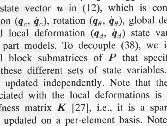
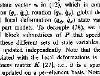

USAGE: thresho inimg outimg [-i] [-L]
thresho program performs binarization with respect to
automatically determined intensity threshold;
the input gray-level image is converted to a binary image;
threshold determination is made by Otsu's
moment preservation method.
ARGUMENTS:
inimg: input image filename (TIF)
outimg: output image filename (TIF)
OPTIONS:
-i: INVERT: intensities ABOVE
(lighter) threshold set to 0
and
those BELOW (darker) threshold set to 255
-L: print Software License
for this module
Example:
thresho text.tif texto.tif
text.tif:

texto.tif:

Copyright (C) 1999 MLMSoftware Group, LLC.